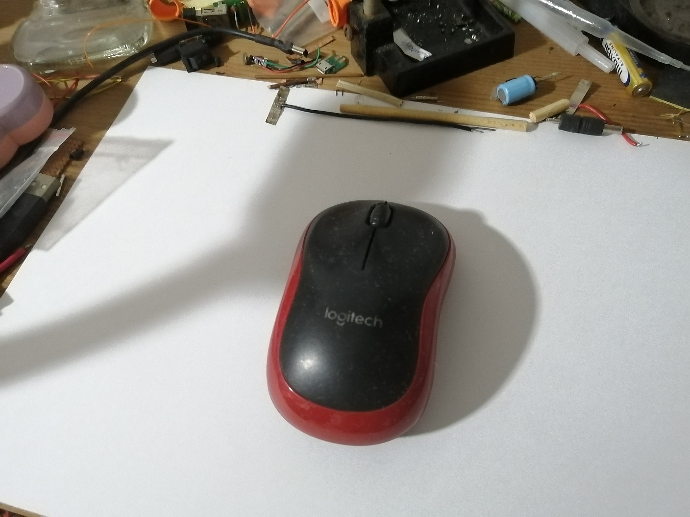
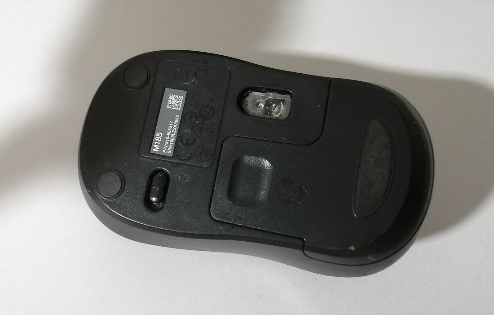
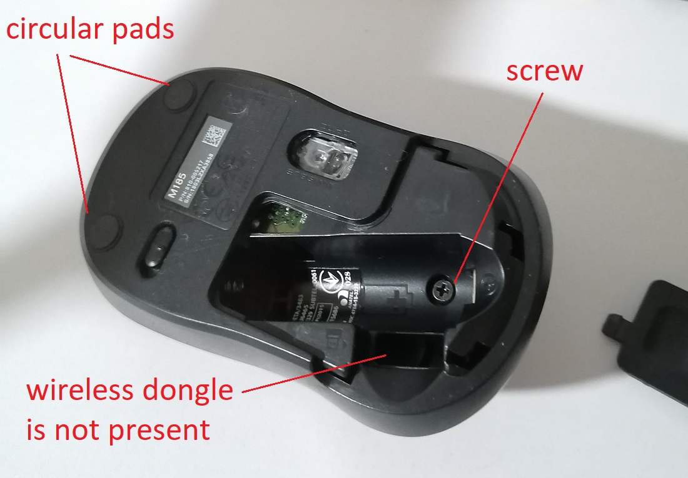
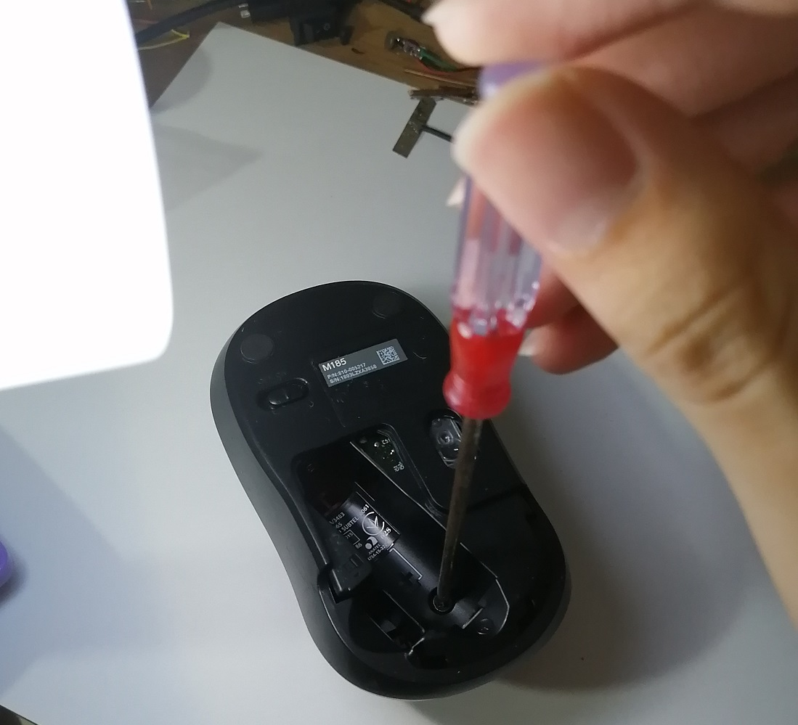
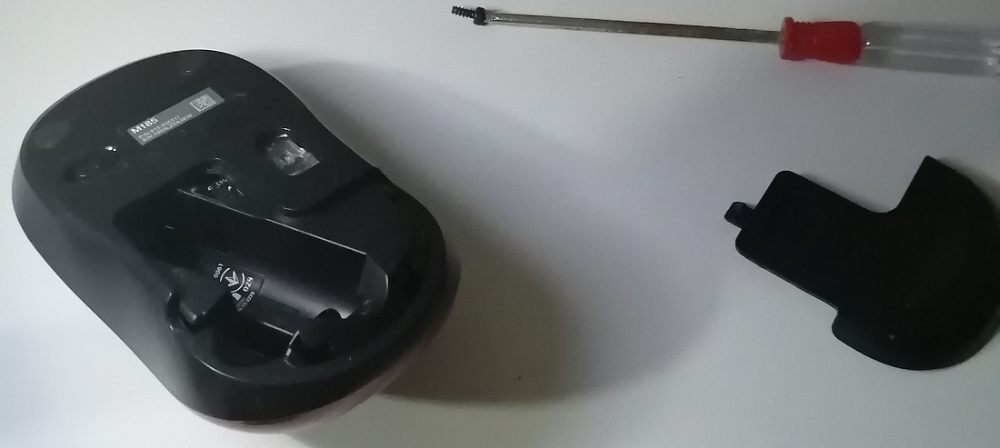
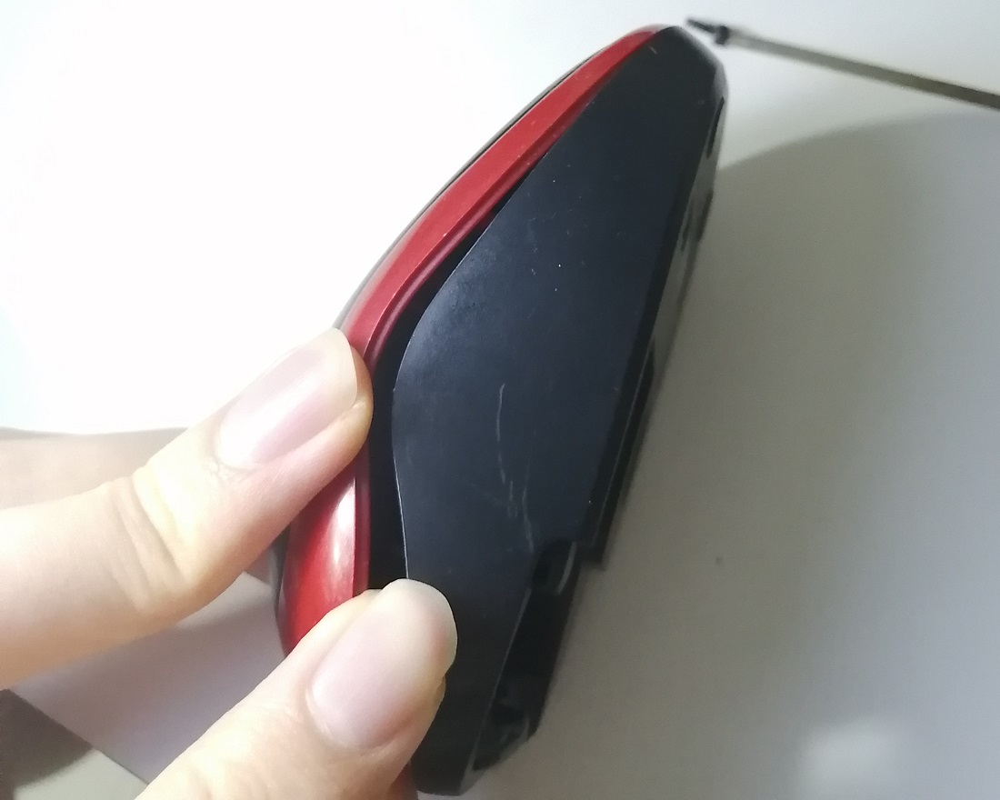
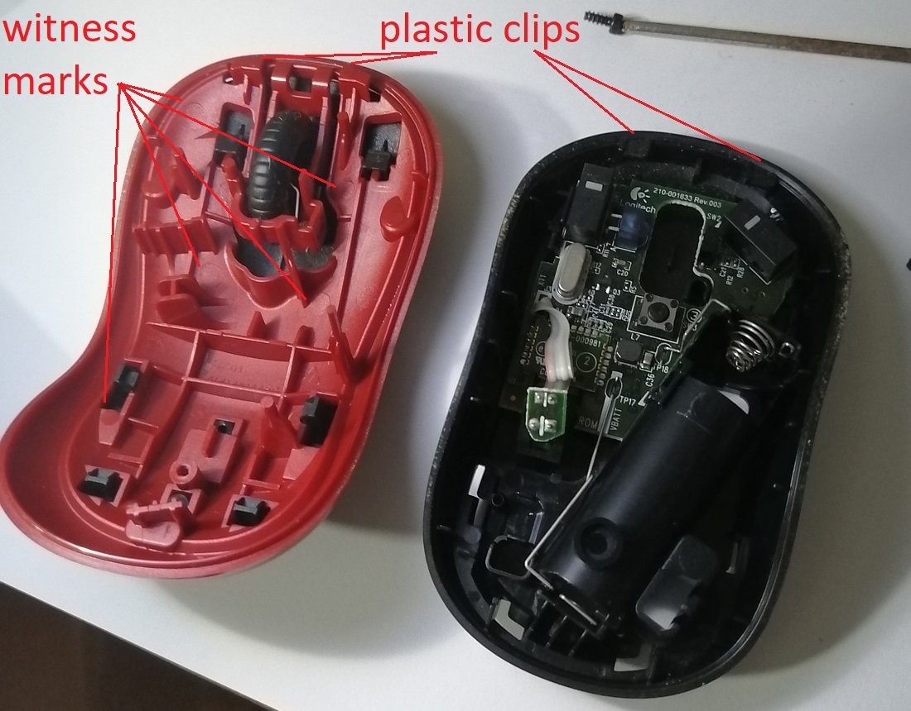

CA1a (15%)
How Stuff Works
Deadline: 8th June 2020Objective:
- To understand mechanical design, components and mechanisms through the practice of reverse engineering.
Tasks:
- Dismantle a discarded consumer product.
- Understand How it works.
- Write a report.
Report:
The report should cover the following content.
- How does this consumer product work?
- Identify 2 component and explain what material it is made out of and the manufacturing process that was employed to make it.
- Identify 1 mechanism and explain how it works.
Include photos in your report to better illustrate and explain.
The discarded consumer product
This mouse was discarded because its wireless dongle is missing.
 After removing the battery cover, we can see there is no wireless USB dongle. It seems that the mouse is only held together with one screw. Sometimes mice have screws under the circular pads, but not this one.
I continued by unscrewing the lone screw.
 It seems like the top is stuck with some clips
After pulling the top half downwards, the two halves are unclipped.

After pulling the top half downwards, the two halves are unclipped.
It seems like there are even more clips to hold the PCB inside.